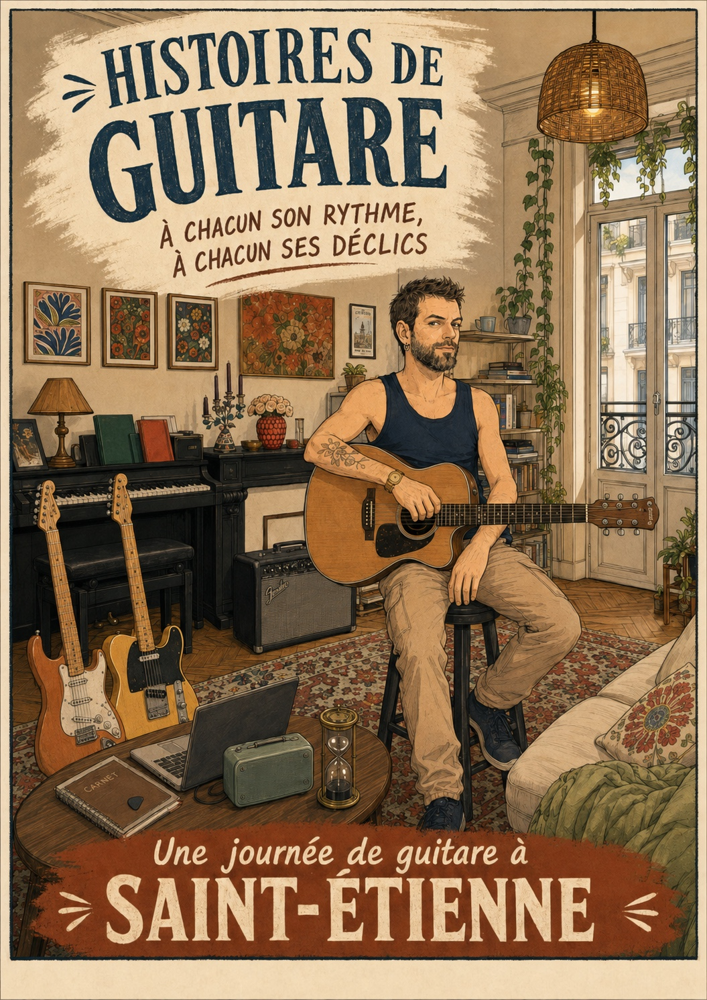
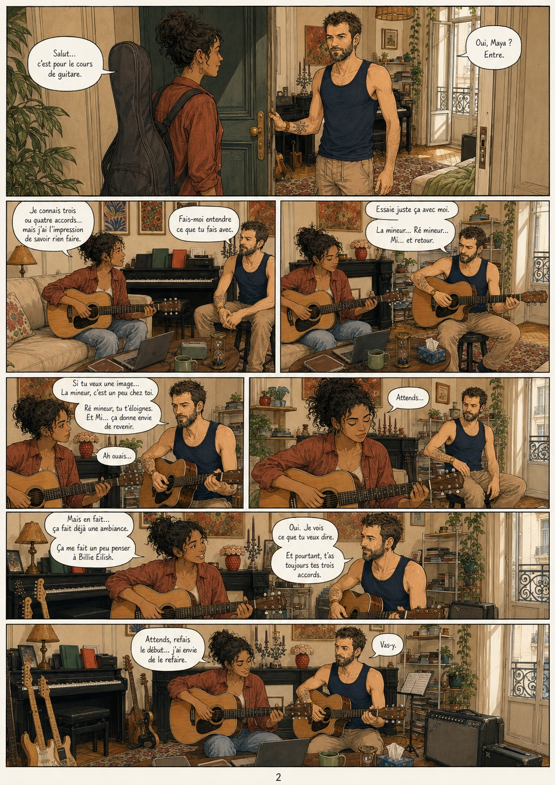
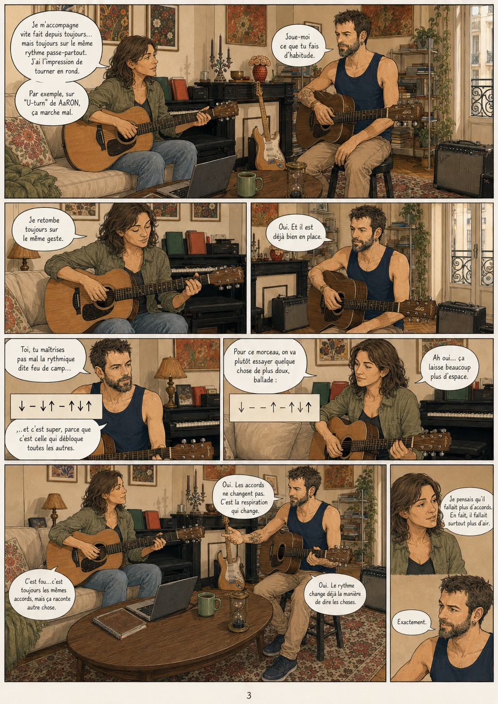
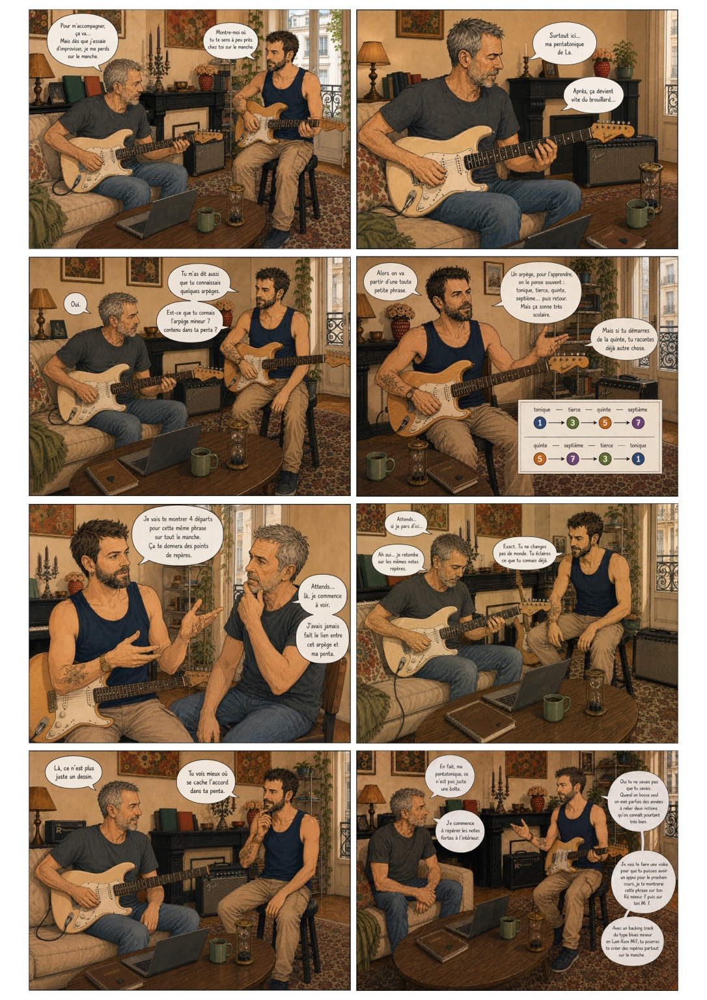
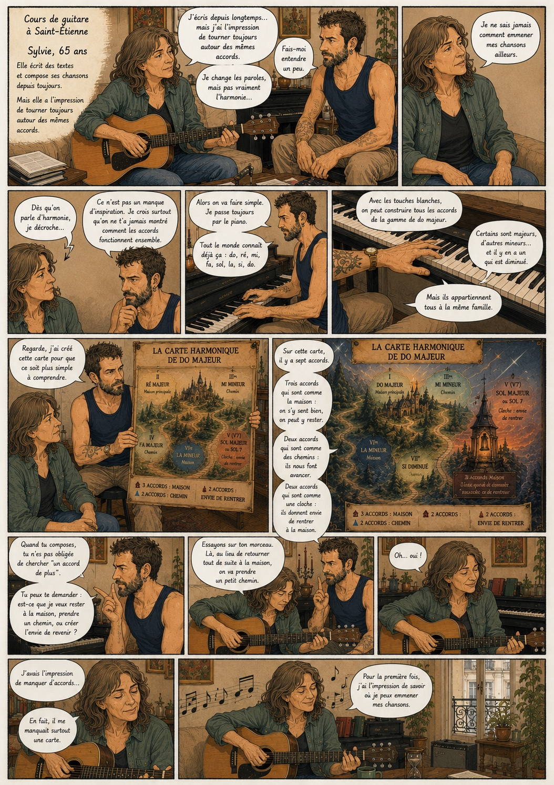
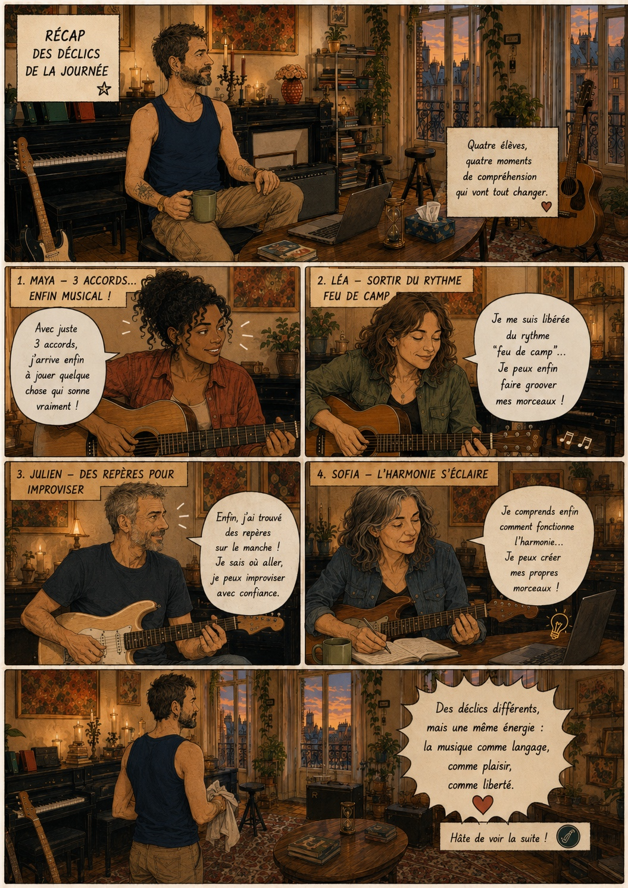
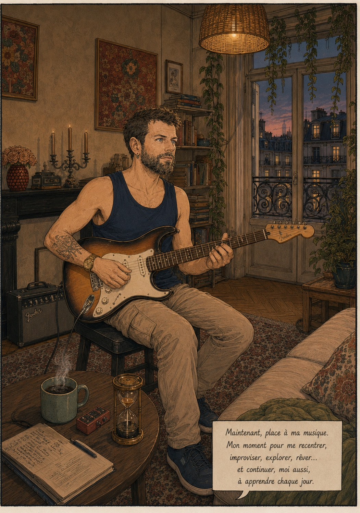
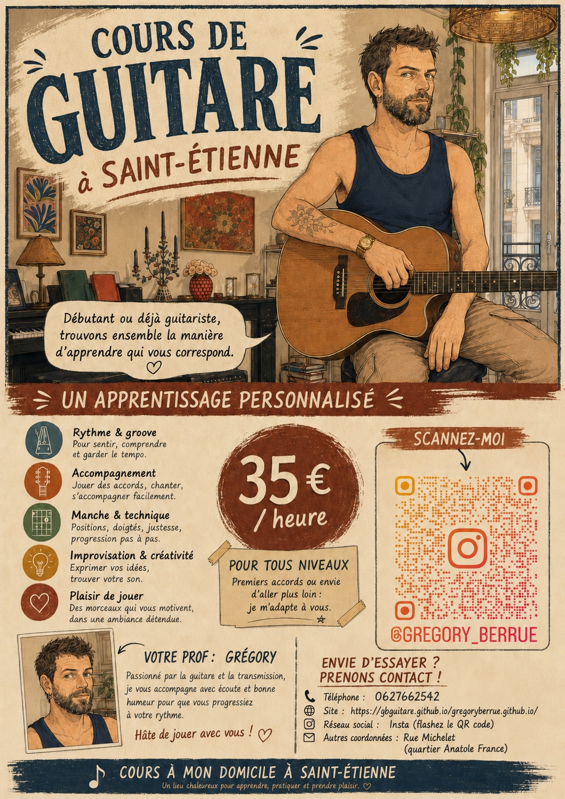

Pour qui ?
- Débutants complets.
- Adultes qui n’osent pas se lancer.
- Guitaristes intermédiaires qui souhaitent progresser.
- Personnes qui reprennent après une pause ou un blocage.
Grégory Berrué
Pour adultes, jeunes adultes et séniors, débutants complets à intermédiaires, etc.
Cours de guitare sur Saint-Étienne avec une approche globale, sensible et personnalisée.
Révélez-vous à travers l’instrument.
Et si la musique devenait un chemin vers vous-même ?
Vous ressentez l’envie de jouer, sans savoir par où commencer… ou vous avez déjà essayé, sans jamais vraiment trouver votre place ?
Il n’est jamais trop tard pour commencer.
N’hésitez pas à regarder la vidéo ou la BD ci-dessous, qui présentent ma manière de fonctionner.
Je propose des cours de guitare à Saint-Étienne centrés sur la personne avant la performance. La guitare devient un outil pour se reconnecter à soi, retrouver du plaisir, de la confiance et s’exprimer librement.
Je n’ai pas grandi avec une guitare entre les mains. Je ne suis pas passé par le conservatoire. Pendant longtemps, la musique est restée quelque chose que je regardais de loin, avec envie, en pensant qu’il était trop tard pour m’y mettre.
J’ai commencé la guitare à 38 ans, après plusieurs années à enchaîner des burn-out, avec cette sensation persistante de ne pas être à ma place.
Puis un jour, j’ai pris une guitare.
Très vite, ça a été une évidence. Pas juste un loisir, mais un point d’ancrage. Quelque chose qui m’a permis de me recentrer, de retrouver du plaisir, du calme, du sens.
Alors j’ai plongé. Des heures chaque jour. Avec enthousiasme, mais aussi avec beaucoup d’erreurs. J’ai cherché seul, je me suis dispersé, j’ai perdu du temps sur des choses inutiles ou mal adaptées à moi.
Et c’est précisément pour ça que j’enseigne aujourd’hui.
Parce que ce chemin, je l’ai parcouru récemment. Je sais ce que ça fait de débuter : les doutes, la frustration, l’impression de ne pas avancer… mais aussi les déclics, les petites victoires, et le plaisir immense quand tout commence à s’aligner.
Je suis convaincu de deux choses : il n’est jamais trop tard pour commencer, et avec une approche adaptée, on peut progresser rapidement et atteindre un très bon niveau.
Aujourd’hui, j’accompagne en priorité des adultes qui ressentent l’envie de jouer sans forcément oser, ou qui pensent que ce n’est plus possible, sans savoir comment s’y prendre. J’accompagne aussi des guitaristes ayant déjà de bonnes bases, mais qui se sentent bloqués, tournent en rond, ou ont perdu le plaisir de jouer.
Pas avec une méthode standard, mais avec une approche humaine, sensible et personnalisée.
Apprendre la guitare, ce n’est pas seulement enchaîner des positions d’accords, mémoriser des schémas de pentatoniques ou parcourir mécaniquement des gammes majeures et mineures sur le manche. C’est trouver ce qui, en nous, demande à éclore… et le laisser s’exprimer.
J’ai développé une approche d’enseignement qui permet, dès les premiers cours, de comprendre l’harmonie à travers des images simples et des métaphores concrètes, qui la rendent accessible et intuitive. J’y associe un travail du rythme clair et structuré, pour ancrer des bases solides et progresser rapidement.
Je joue et j’enseigne presque tous les styles. Certains styles très spécifiques, comme le manouche, ne font pas partie de mon champ d’expertise : dans ce cas, je préfère vous rediriger vers un enseignant plus spécialisé.
J’ai également des bases solides en chant, ce qui me permet de vous accompagner si vous souhaitez jouer tout en chantant. Je peux aussi vous accompagner sur le solfège si vous en ressentez le besoin, même si je considère que pour la guitare, ce n’est pas indispensable.
Je prépare spécifiquement chaque cours pour vous, d’une séance à l’autre, en fonction de votre progression, de vos objectifs et de votre sensibilité.
Enfin, le cours est aussi un temps d’échange. Mais je tiens à ce que ce temps ne soit pas facturé sur votre heure de cours. Pour cela, j’utilise un sablier de 30 minutes, que l’on retourne deux fois pendant la séance. Entre deux cycles, une pause est possible : prendre un café, échanger librement, souffler… puis reprendre quand vous vous sentez prêt.
Je prévois toujours une marge entre deux élèves, car mieux vous connaître fait pleinement partie du travail — et me permet de vous accompagner de manière plus juste, plus humaine.
Je vous reçois chez moi, dans un cadre entièrement pensé pour vous accueillir. Mon salon a été aménagé spécifiquement pour que vous vous y sentiez à l’aise, dans de bonnes conditions pour apprendre et progresser.
Je dispose également d’un piano, qui me permet parfois d’expliquer certaines notions — notamment d’harmonie — de manière plus visuelle et intuitive que sur la guitare.
Un aperçu en musique.
Une bande dessinée pour découvrir ma manière d'enseigner, à travers une journée de cours à Saint-Étienne.








Vous pouvez me laisser quelques informations pour que je comprenne mieux votre demande avant de vous répondre.